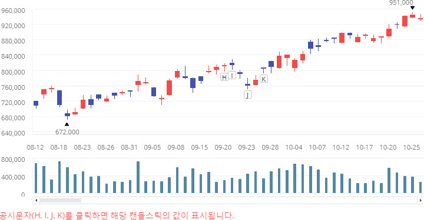

|
알메이트-차트 6.0 사용 설명서
|
알메이트 차트는 사용자가 차트와 인터렉션하기 위한 방법으로 이벤트 처리 기능을 제공합니다. 이벤트 처리를 통해서 차트의 특정 데이터 포인트의 값이 미리 정의한 어떤 조건과 부합할 경우 특별한 처리를 할 수 있습니다. 또한 사용자가 차트 내의 구성 요소 (배경, 제목, 레이블, 데이터 포인트 등)에 마우스를 클릭하거나 호버링(hovering)할 경우 혹은 차트의 값이 변경되거나 확대(Zooming)가 일어날 경우 필요한 정보를 보여주기 위한 사용자 정의 자바스크립트 함수를 작성할 수 있습니다.
다른 차팅 제품들에 비해서 알메이트 차트의 이벤트 처리 방식의 장점은 개발자에게 쉬운 코딩 인터페이스를 제공한다는 것입니다. 알메이트 차트에서는 다른 모든 차트 제품들이 사용하는 방식인 이벤트 리스너를 등록하는 자바스크립트 코딩을 할 필요가 없습니다. 레이아웃을 작성할 때 이벤트 처리가 필요한 차트 요소를 정의하는 XML 노드 상에 특정 이벤트 속성값을 자바스크립트 함수명으로 설정하는 간단한 방식을 사용합니다.
다음은 캔들스틱 차트에서 사용자가 심볼을 클릭하면 공시자료를 보여주는 예제입니다.
위 예제 코드에서는 캔들스틱 차트의 시리즈를 정의하는 <Candlestick2DSeries> 노드의 심볼 클릭 이벤트 속성값(symbolClickJsFunction)에 자바스크립트 함수명(gongsiDataFunc)이 설정되었습니다. 자바스크립트 함수에서는 사용 가능한 차트 데이터들이 입력 파라메터 값으로 넘어오는데 이를 이용해서 원하는 정보를 차트상에 표시하는 것이 다음과 같이 가능합니다. 다음 차트에서 9 월 20 일과 9 월 23 일 사이의 데이터 포인트 상의 사각형 심볼(H, I, J, K)을 클릭하면 차트 하단의 박스에 자세한 가격 정보가 표시되는 것을 볼 수 있습니다.
See the CodePen 알메이트 차트 - 캔들스틱 차트 - 클릭 이벤트 처리
알메이트 차트에서는 사용자가 차트의 데이터 포인트에 마우스를 호버링(hovering)하면 기본적으로 툴팁(Tooltips)이 표시됩니다. 알메이트 차트에서 기본으로 제공하는 툴팁의 형태와 다른 형태의 툴팁을 차트 사용자에게 보여주기를 원할 경우에는 마우스 호버링 이벤트에 원하는 포맷의 툴팁을 만드는 자바스크립트 함수를 설정할 수 있습니다. 다음은 컬럼 차트의 컬럼에 사용자가 마우스를 호버링할 경우 HTML 포맷의 툴팁을 화면에 표시하는 자바스크립트 함수를 레이아웃에 설정한 코드 예제입니다.
다음 차트의 칼럼에 마우스를 옮기면 이미지와 값이 HTML 로 포맷된 형태의 툴팁이 표시됩니다.
See the CodePen 알메이트 차트 - 사용자 정의 툴팁 표시 - 호버링 이벤트 처리
컬럼 차트 혹은 라인 차트에서 표현해야 할 데이터의 수가 한 화면에 보여줄 수 있는 데이터 수보다 많을 경우, 스크롤바를 이용해서 차트를 표현하게 됩니다. 이 때 전체 데이터를 차트가 생성되는 시점에 한번에 로드한다면, 데이터를 처리하는 시간이 많이 소요될 것이고 결과적으로 차트가 화면에 표현되기까지 사용자가 오랜 시간을 기다려야하는 문제가 생길 수 있습니다. 어짜피 한 화면에서 사용자가 식별할 수 있는 데이터의 수는 한정되어 있기 때문에, 한 화면에 표현하기 적당한 데이터의 수 단위로 처리를 하는 것이 효율적일 것입니다. 그러기 위해서는 스크롤바의 위치가 끝 부분에 도달하면 자동으로 새로운 자료를 로드하는 것이 필요한데, 이렇게 데이터를 처리하는 방식을 레이지 로딩(Lazy Loading)이라고 합니다. 알메이트 차트에서는 스크롤바의 이벤트를 받아서 레이지 로딩을 처리할 수 있도록하는 lazyJsFunction 속성을 제공합니다. 다음은 컬럼 차트의 한 화면에 19 개의 데이터를 표현한다고 가정할 때 레이지 로딩을 처리하기 위한 레이아웃과 코드입니다.
다음 컬럼 차트에서 최초에 차트가 생성된 후 스크롤바를 이동하면, 19 번째 데이터(스크롤바의 끝)가 표시되는 지점에서 자동으로 데이터가 로드되는 것을 확인할 수 있습니다.
See the CodePen 알메이트 차트 - 레이지 로드
경우에 따라서는 차트의 생성이 완료되자 마자 웹 페이지 내에서 원하는 처리를 해야할 경우가 있습니다. 알메이트 차트는 차트 렌더링이 완료되면 이벤트를 처리하는 기능을 제공합니다. 레이아웃 XML의 차트 레벨 노드(예, <Column2DChart>, <Line2DChart> 등)에서 displayCompleteCallFunction 속성에 자바스크립트 함수를 지정하면 차트의 렌더링이 완료되자 마자 해당 자바스크립트 함수를 실행할 수 있습니다. 다음은 컬럼 차트의 렌더링이 완료되자 마자 완료 메시지를 자바스크립트 alert 함수를 이용해서 보여주는 코드 예제입니다.
See the CodePen 알메이트 차트 - 차트 로드 완료 이벤트 처리하기
차트에 표현되는 데이터 값에도 이벤트를 적용할 수 있는데 이는 알메이트 차트만의 강력한 이벤트 처리 기능입니다. 예를 들어 목표 대비 실적 차트에서 목표를 100% 이상 달성한 월에는 스마일 이미지를 표현하고, 실적값이 목표값의 80% 에 이르지 않으면 크라이 이미지를 표현할 수 있습니다. 그 이외에도 사용자의 요구사항과 개발자의 다양한 아이디어를 적용하여 인터렉티브한(Interactive) 차트를 생성할 수 있습니다. 다음은 목표 대비 실적 차트에서 데이터 이벤트를 적용하는 레이아웃과 코드입니다.
See the CodePen 알메이트 차트 - 데이터 값(이벤트)에 따라서 필요한 정보 표현하기
| 이벤트 타입 | 차트 요소 | 속성 | XML 노드 |
|---|---|---|---|
| 클릭 | 축 | axisClickJsFunction (카테시안 차트) |
<Area2DChart>, <Bar2DChart>, |
| 차트 | chartClickJsFunction |
모든 차트 레벨 노드 |
|
| 데이터 포인트 | itemClickJsFunction |
모든 차트 레벨 노드 |
|
| 텍스트 | itemClickJsFunction |
||
| 심볼 | symbolClickJsFunction |
<CandleArea2DSeries>, <CandleLine2DSeries>, |
|
| 더블 클릭 | 차트 | chartDoubleClickJsFunction |
모든 차트 레벨 노드 |
| 데이터 포인트 | itemDoubleClickJsFunction |
모든 차트 레벨 노드 |
|
| 마우스 다운 | 데이터 포인트 | itemDownJsFunction |
모든 차트 레벨 노드 |
| 마우스 업 | 데이터 포인트 | itemUpJsFunction |
모든 차트 레벨 노드 |
| 마우스 무브 | 데이터 포인트 | itemMoveJsFunction |
모든 차트 레벨 노드 |
| 호버링 (마우스 오버) | 축 | axisDataTipJsFunction |
카테시안 차트 |
| 차트 | chartOverJsFunction |
모든 차트 레벨 노드 |
|
| 데이터 포인트 | dataTipJsFunction |
카테시안 차트, |
|
itemOverJsFunction |
모든 차트 레벨 노드 |
||
innerTipJsFunction |
<HCylinderGauge>, <HLinearGauge>, |
||
targetTipJsFunction |
<HCylinderGauge>, <HLinearGauge>, |
||
| 범례 아이템 | titleJsFunction |
||
| 마우스 아웃 | 차트 | chartOutJsFunction |
모든 차트 레벨 노드 |
| 데이터 포인트 | itemOutJsFunction |
모든 차트 레벨 노드 |
|
| 변경 | 값 | valueChangeFunction |
<CircularGauge>, <Gauge>, |
| 스크롤바 | lazyJsFunction |
카테시안 차트 |
|
| 십자선 | rangeUpdateJsFunction |
||
| 데이터 이벤트 | 값 | htmlJsFunction |
모든 시리즈 레벨 노드 |
| 렌더링 | 차트 | displayCompleteCallFunction |
모든 차트 레벨 노드 |